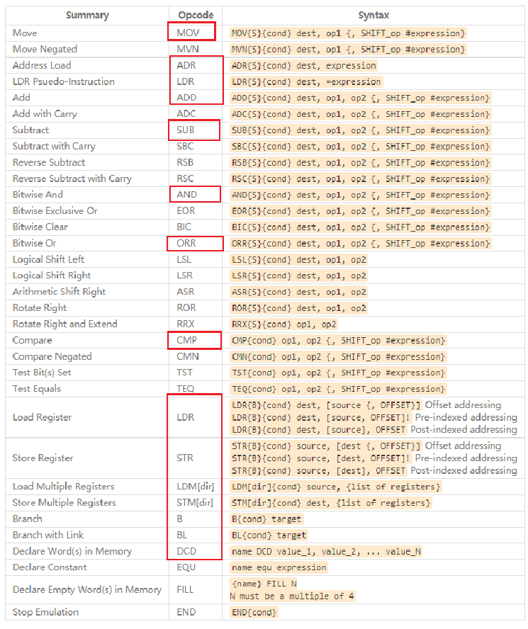

一、ARM汇编概述
一开始，ARM公司发布两类指令集：
① ARM指令集，这是32位的，每条指令占据32位，高效，但是太占空间
② Thumb指令集，这是16位的，每条指令占据16位，节省空间
要节省空间时用Thumb指令，要效率时用ARM指令。
一个CPU既可以运行Thumb指令，也能运行ARM指令。
怎么区分当前指令是Thumb还是ARM指令呢？
程序状态寄存器中有一位，名为“T”，它等于1时表示当前运行的是Thumb指令。
假设函数A是使用Thumb指令写的，函数B是使用ARM指令写的，怎么调用A/B？
我们可以往PC寄存器里写入函数A或B的地址，就可以调用A或B，
但是怎么让CPU在执行A函数是进入Thumb状态，在执行B函数时进入ARM状态？
做个手脚：
调用函数A时，让PC寄存器的BIT0等于1，即：PC=函数A地址+(1<<0)；
调用函数B时，让PC寄存器的BIT0等于0:，即：PC=函数B地址
为了解决这类麻烦的事情，引入Thumb2指令集，
它支持16位指令、32位指令混合编程。
问：三种指令集，我们是否需要全部会？如何区分？
ARM公司推出了： Unified Assembly Language
UAL，统一汇编语言，你不需要去区分这些指令集。
在程序前面用CODE32/CODE16/THUMB表示指令集:
ARM/Thumb/Thumb2
1.1 如何学习汇编
日常工作中，
只需要这么几条汇编指令，从名字就可以猜出含义：
常用汇编指令格式及使用在此列出
有需要再学习即可，无需花费大量时间去学些这类知识，需要即可百度
若很感兴趣，参考《ARM Cortex-M3与Cortex-M4权威指南.pdf》

二、汇编指令的格式
汇编指令可以分为几大类：数据处理、内存访问、跳转、饱和运算、其他指令
1.1 指令格式（1）
汇编指令的格式，如下：
label：
instruction @ comment
label，即标签，表示地址位置，可以通过label得到指令/数据地址
instruction，即指令，表示汇编指令或伪指令
@ comment，@表示后面是注释，comment表示注释内容
比如：
addnum:
mov r0, #0 @ 将R0寄存器设置成0
上面汇编代码中，addnum表示标签，mov r0, #0表示指令，@ 将R0寄存器设置成0 表示 注释
1.2 指令格式（2）
Operation{cond} {S} Rd, Rn, Operand2
Operation：表示各类汇编指令，比如ADD，MOV；
cond：表示condition，即该指令执行的条件；
S表示该指令执行后，会去修改程序状态寄存器；
Rd为目的寄存器，用来存储运算的结果；
Rn、Operand2是两个源操作数
1.2.1 Operation

1.2.2 cond取值

三、汇编指令学习(基础)
2.1 内存访问指令
读内存指令LDR/LDM：参考《DEN0013D_cortex_a_series_PG.pdf》P340、P341
写内存指令STR/STM：参考《DEN0013D_cortex_a_series_PG.pdf》P377、P378
LDR：Load Register；
LDM：Load Multiple Register；
STR：Store Register；
STM：Store Multiple Register。
2.1.1 LDR指令
LDR：L表示LOAD，LOAD的含义应该理解为：Load from memory into register。下面这条语句就说明的很清楚：
LDR R1, [R2]
R1<——[R2]
就是把R2所指向的存储单元的内容的值（一个memory地址内的值），读取到R1中（一个register）

2.1.2 STR指令
STR：S表示STORE，STORE的含义应该理解为：Store from a register into memory。下面这条语句表示的很清楚：
STR R1, [R2]
R1——>[R2]
就是把寄存器R1中的内容“保存”到R2所指向的存储的单元中（一个memory地址）

这两条语句都有个特点，就是寄存器写在前面（左边）而内存地址写在后面（右边），数据传送的方向则是恰好相反的。
2.1.3 LDM指令
LDM：L的含义仍然是LOAD，即是Load from memory into register。
虽然貌似是LDR的升级，但是，千万要注意，这个指令运行的方向和LDR是不一样的，是从左到右运行的。该指令是将内存中堆栈内的数据，批量的赋值给寄存器，即是出栈操作；其中堆栈指针一般对应于SP，注意SP是寄存器R13，实际用到的却是R13中的内存地址，只是该指令没有写为[R13]，同时，LDM指令中寄存器和内存地址的位置相对于前面两条指令改变了，下面的例子：
LDMFD SP! , {R0, R1, R2}
实际上可以理解为： LDMFD [SP]!, {R0, R1, R2}
意思为：把sp指向的3个连续地址段（应该是3*4=12字节（因为为r0,r1,r2都是32位））中的数据拷贝到r0,r1,r2这3个寄存器中去；

2.1.4 STM指令
STM：S的含义仍然是STORE，与LDM是配对使用的，其指令格式上也相似，即区别于STR，是将堆栈指针写在左边，而把寄存器组写在右边。
STMFD SP!, {R0}
该指令也可理解为： STMFD [SP]!, {R0}
意思是：把R0保存到堆栈（sp指向的地址）中。

这两个堆栈操作指令也有个特点，就是寄存器组写在后面（右边）而堆栈指针写在前面（左边），而且实际上使用的是堆栈指针中的内存地址，这一点与前面两条指令是有区别的。
（补充：sp后面的！的作用：R0的值在ldm过程中发生的增加或减少，最后写回到R0中去，也就是ldm时会改变R0的值）
2.1.5 LDM与STM的地址模式
addr_mode:
IA - Increment After, 每次传输后才增加Rn的值(默认,可省)
IB - Increment Before, 每次传输前就增加Rn的值(ARM指令才能用)
DA – Decrement After, 每次传输后才减小Rn的值(ARM指令才能用)
DB – Decrement Before, 每次传输前就减小Rn的值
! : 表示修改后的Rn值会写入Rn寄存器, 如果没有"!", 指令执行完后Rn恢复/保持原值
^ : 会影响CPSR, 在讲异常时再细讲

2.2 分支跳转指令
跳转指令用于实现程序流程的跳转，在 ARM 程序中有两种方法可以实现程序流程的跳转：
(1) 直接向程序计数器 PC 写入跳转地址值。
通过向程序计数器 PC 写入跳转地址值，可以实现在 4GB 的地址空间中的任意跳转，在跳转之前结合使用
MOV LR ， PC
(2) 使用专门的跳转指令。
参考《DEN0013D_cortex_a_series_PG.pdf》P327、P328、P329
核心指令是B、BL：
B：Branch，跳转
BL：Branch with Link，跳转前先把返回地址保持在LR寄存器中
BX：Branch and eXchange，根据跳转地址的BIT0切换为ARM或Thumb状态(0：ARM状态，1：Thumb状态)
BLX：Branch with Link and eXchange
根据跳转地址的BIT0切换为ARM或Thumb状态(0：ARM状态，1：Thumb状态)
2.2.1 B指令
B 指令的格式为：
B{条件} 目标地址
B{条件} 目标地址
B 指令是最简单的跳转指令。一旦遇到一个 B 指令，ARM 处理器将立即跳转到给定的目标地址，从那里继续执行。
注意存储在跳转指令中的实际值是相对当前PC 值的一个偏移量，而不是一个绝对地址，它的值由汇编器来计算（参考寻址方式中的相对寻址）。它是 24 位有符号数，左移两位后有符号扩展为 32 位，表示的有效偏移为 26 位(前后32MB 的地址空间)。以下指令：
B Label ；程序无条件跳转到标号 Label 处执行
CMP R1 ，＃ 0 ；当 CPSR 寄存器中的 Z 条件码置位时，程序跳转到标号 Label 处执行
BEQ Label

.W是一个可选的指令宽度说明符，用于强制要求在 Thumb-2 中使用 32 位 B 指令。
2.2.2 BL指令
BL 指令的格式为：
BL{条件} 目标地址
BL 是另一个跳转指令，但跳转之前，会在寄存器R14 中保存PC 的当前内容，因此，可以通过将R14 的内容重新加载到PC 中，来返回到跳转指令之后的那个指令处执行。该指令是实现子程序调用的一个基本但常用的手段。以下指令：
BL Label ；当程序无条件跳转到标号 Label 处执行时，同时将当前的 PC 值保存到 R14 中

2.2.3 BX指
BX 指令的格式为：
BX{条件} 目标地址
BX 指令跳转到指令中所指定的目标地址，目标地址处的指令既可以是ARM 指令，也可以是Thumb指令。

2.2.4 BLX指令
BLX 指令的格式为：
BLX 目标地址
BLX 指令从ARM 指令集跳转到指令中所指定的目标地址，并将处理器的工作状态有ARM 状态切换到Thumb 状态，该指令同时将PC 的当前内容保存到寄存器R14 中。因此，当子程序使用Thumb 指令集，而调用者使用ARM 指令集时，可以通过BLX 指令实现子程序的调用和处理器工作状态的切换。
同时，子程序的返回可以通过将寄存器R14 值复制到PC 中来完成。

2.3 立即数
这样一条指令：
MOV R0, #VAL
意图是把VAL这个值存入R0寄存器。
问：VAL可以是任意值吗？
答：不可以，必须是立即数。假设VAL可以是任意数，”MOV R0, #VAL”本身是16位或32位，哪来的空间保存任意数值的VAL？
所以，VAL必须符合某些规定。

2.4 伪指令（常用）
2.4.1 LDR伪指令
想把任意数值赋给R0，可以使用伪指令：
LDR R0, =VAL
“伪指令”，就是假的、不存在的指令。
注意LDR作为“伪指令”时，指令中有一个“=”，否则它就是真实的LDR(load regisgter)指令了。
编译器读取伪指令时的操作：
编译器会把“伪指令”替换成真实的指令，比如：
LDR R0, =0x12
0x12是立即数，那么替换为：MOV R0, #0x12
LDR R0, =0x12345678
0x12345678不是立即数，那么替换为：
LDR R0, [PC, #offset] // 2. 使用Load Register读内存指令读出值，offset是链接程序时确定的
……
Label DCD 0x12345678 // 1. 编译器在程序某个地方保存有这个值
如果一定需要赋值一个数，但是又不符合立即数的规则，那么就可以使用伪指令
2.4.2 ADR伪指令
语法格式： ADR {cond} reg，expr
其中：cond——可选的指令执行条件。
reg——目标寄存器。
expr——基于PC或基于寄存器的地址表达式。
ADR伪指令将基于PC相对偏移的地址值或基于寄存器相对偏移的地址值读取到寄存器中。在汇编编译器编译源程序时，ADR伪指令被编译器替换成一条合适的指令。通常，编译器用一条ADD指令或SUB指令来实现该ADR伪指令的功能，若不能用一条指令实现，则产生错误，编译失败。
ADR伪指令格式 ：ADR{cond} register, expr
地址表达式expr的取值范围：
当地址值是字节对齐时，其取指范围为: +255 ～ 255B；
当地址值是字对齐时，其取指范围为: -1020 ～ 1020B；
ARM编译器与GCC编译器语法差别

四、汇编指令学习（常用）
常用的汇编指令一般有mov、bl/b、add/sub、ldm/stm、push/pop等等，下面一一介绍。
4.1 MOV指令
Move register or constant，把某个寄存器的值移给另一个寄存器，或是把一个常数移入寄存器。
mov r1, #10 @ 将10赋值给寄存器r1，即r1=10
指令执行过程，如下：

1. 取址
假设从内存的addrA地址取机器码e3a0100a（即mov r1, #10指令）
2. 译码
原来是MOV指令
3. 执行
CPU内部寄存器R1等于10
其中，机器码e3a0100a，MOV指令各位的解析如下：

[31:28]位是条件码0xe；[15：12]位是寄存器R1，即0x1；[12:0]位是立即数10，即0x00a
4.2 BL指令
Branch with Link，跳转并把返回地址记录在LR寄存器里。
bl test_tag
mov r1, #10
test_tag:
mov r3, #0
mov pc, lr
第1行，跳转到test_tag标签处执行“mov r3, #0”指令，并且将下一条指令即“mov r1, #10”指令的地址存储到 LR 寄存器。
第6行，返回到“mov r1, #10”指令地址，并且执行“mov r1, #10”指令
指令执行过程，如下：

1. CPU从内存的addrA地址取机器码eb000000（即“bl test_tag”指令），执行后，PC跳转到test_tag标签位置，即内存的addrA+8地址，从上图可知，其实test_tag标签的地址是“mov r3, #0”指令的地址。同时自动将内存的addrA+4地址存储在寄存器LR中。
2. CPU从内存的addrA+8地址取机器码e3a03000（即“mov r3, #0”指令），执行，CPU内部寄存器R3等于0。
3. CPU从内存的addrA+12地址取机器码e1a0f00e（即“mov pc, lr”指令），执行，PC跳转到内存的addrA+4地址。
4. CPU从内存的addrA+4地址取机器码e3a0100a（即“mov r1, #10”指令），执行，CPU内部寄存器R1等于10
其中，机器码eb000000，BL指令各位的解析如下：

imm[23:0]是PC值与标签的偏移值除以4，但是此处的偏移值是0，为什么呢？这是因为ARM采用三级流水线的方法，即取指、译码、执行指令。所以当ARM执行addrA地址的“bl test_tag”指令时，但是PC已经指向addrA+8地址进行取“mov r3, #0”指令，也就是PC值等于当前指令地址加8，所以要跳去执行“addrA+8”的指令，偏移值就要设置为0：执行这条bl指令后，新的PC=PC+偏移，刚好就是“addrA+8”。
4.2 B指令
Branch，跳转指令。相比于BL指令，它并不保存下一条指令的地址到LR寄存器。
b test_tag
mov r1, #10
test_tag:
mov r3, #0
第1行，只是跳转到test_tag标签处执行“mov r3, #0”指令，没有保存返回地址。
指令B与指令BL，大同小异，此处就不一一分析了，可以参数指令BL，它们的区别：BL指令的下一条指令的地址会被存储到LR寄存器，而B指令不会存储。
4.3 ADD/SUB指令
加法、减法指令。
mov r1, #10
add r2, r1, #4
sub r2, r1, #4
第2行，r2 = r1 + 4。
第3行，r2 = r1 - 4。
指令执行过程，如下：

CPU从内存的addrA+4地址取机器码e2812004（即add r2, r1, #4指令），执行后，CPU内部寄存器R2等于14
CPU从内存的addrA+8地址取机器码e2412004（即sub r2, r1, #4指令），执行后，CPU内部寄存器R2等于6
其中，机器码e2812004，ADD指令各位的解析如下：

[19: 16]位是源寄存器R1，即1；[15: 12]位是目标寄存器R2，即2；[11: 0]位是立即数4，即0x004；
其中，机器码e2412004，SUB指令各位的解析如下：

[19: 16]位是源寄存器R1，即1；[15: 12]位是目标寄存器R2，即2；[11: 0]位是立即数4，即0x004；
4.4 LDR/STR指令
Store register to memory/Load register from memory，前者是把寄存器的值写入内存，后者是读内存到寄存器。
mov r0, #400H @ 0x400
mov r1, #aH @ 0xa
str r1, [r0]
ldr r2, [r0]
第3行，将寄存器R1的值0xa存储到寄存器R0指向的地址0x400，即内存0x400地址的值为0xa
第4行，将寄存器R0指向地址0x400的数据赋值给寄存器R2，即CPU内部寄存器R2等于0xa
指令执行过程，如下：

1. CPU从内存的addrA 地址取机器码e3a00b01（即mov r0, #400H指令），执行后，CPU内部寄存器R0等于0x400
2. CPU从内存的addrA+4地址取机器码e3a0100a（即mov r1, #aH指令），执行后，CPU内部寄存器R1等于0xa
3. CPU从内存的addrA+8地址取机器码e5801000（即str r1, [r0]指令），执行后，寄存器R1的0xa数据存储到寄存器R0指向的地址0x400，即内存的0x400地址的值为0xa（结论正确，但是前文描述不准确）
4. CPU从内存的addrA+12地址取机器码e5902000（即ldr r2, [r0]指令），执行后，寄存器R0指向的地址0x400的数据存储到CPU内部寄存器R2，即CPU内部寄存器R2等于0xa（结论正确，但是前文描述不准确）
注意源寄存器和目标寄存器位置
其中，机器码e5801000，STR指令各位的解析如下：
STR语法中是：源寄存器+目标寄存器

[19: 16]位是目标寄存器R0，即0；[15: 12]位是源寄存器R1，即1；
其中，机器码e5902000，LDR指令各位的解析如下：
LDR语法中是：目标寄存器+源寄存器

[19: 16]位是源寄存器R0，即0；[15: 12]位是目标寄存器R2，即2；
4.5 LDR伪指令
所谓“伪指令”就是假的、不真实存在的指令。编译器会用真正的指令来代替它。
Ldr指令的参数中，有“=”时，它就是伪指令，不再是上小节讲的“读内存”指令了。
ldr sp,=0x80200000
这个是一条伪指令，即实际中并不存在这个指令，它会被拆分成几个真正的ARM指令，实现一样的效果，将0x80200000赋值给寄存器sp，即sp=0x80200000。
指令执行过程，如下：

ldr sp,=0x80200000这条伪指令，被翻译成一条指令来执行： ldr sp, [pc, #-4]。它是一条读内存指令，显然，在“pc-4”这个地址对应的内存里存有0x80200000这个数值。这是编译器预先把0x80200000设置在这个地址的。
4.6 LDM/STM指令
ldm，Load multiple registers，从内存里把值加载进多个寄存器。
stm，Store Multiple，把多个寄存器的值存储到内存。
格式：
ldm{cond} Rn{!}, reglist
stm{cond} Rn{!}, reglist
参数说明：
cond：如下所示，下面列出的前四个条件是用于数据块操作，后四个条件是用于堆栈操作：
IA : Increment After，先传输再增加地址
IB : Increment Before，先增加地址再传输
DA : Decrement After，先传输再减小地址
DB : Decrement Before，先减小地址再传输
FD : 满递减堆栈
FA : 满递增堆栈
ED : 空递减堆栈
EA : 空递增堆栈
Rn：基址寄存器，里面含有内存的起始地址。
！：表示最后的地址写回到Rn中。
reglist：里面列出多个寄存器，如{R1,R2,R6-R9}。
注意：传输数据时，低号寄存器对应低地址，高号寄存器对应高地址。
示例：
ldr r1,=0x10000000
ldmib r1!, {r0,r4-r6}
stmda r1!, {r0,r4-r6}
第1行，将起始地址0x10000000赋值给r1
第3行，因为使用ib，所以每次传送前地址加4，具体操作如下(低地址的值存入低号寄存器)：
将0X10000004地址的内容赋值给R0
将0X10000008地址的内容赋值给R4
将0X1000000C地址的内容赋值给R5
将0X10000010地址的内容赋值给R6
“!”表示，最后的地址写回到R1中，R1=0X10000010
第4行，因为使用da，所以每次传送后地址减4，具体操作如下(低号寄存器的值存入低地址)：
将R6存储到0X10000010地址
将R5存储到0X1000000C地址
将R4存储到0X10000008地址
将R0存储到0X10000004地址
“!”表示，最后的地址写回到R1中，R1=0X10000000
如下图所示：

4.6.1 堆栈操作：满递减堆栈
ldr sp,=0x80200000
stmfd sp!, {r0-r2} @ 入栈
ldmfd sp!, {r0-r2} @ 出栈
第1行，将0x80200000赋值给sp，作为堆栈的起始地址
第3行，入栈，具体操作如下：
将R2存储到0X80200000地址
将R1存储到0X801FFFFC地址
将R0存储到0X801FFFF8地址
第4行，出栈，具体操作如下：
将0X801FFFF8地址的内容赋值给R0
将0X801FFFFC地址的内容赋值给R1
将0X80200000地址的内容赋值给R2
如下图所示：

上述第3，4行汇编代码，就是所谓的入栈，出栈。也可以用push，pop指令完成入栈，出栈，如下
ldr sp,=0x80200000
push {r0-r2} @ 入栈
pop {r0-r2} @ 出栈LDR
4.6.2 参考资料
4.7 ALIGN 指令
语法如下：
ALIGN bound
Bound 可取值有：1、2、4、8、16。当取值为 1 时，则下一个变量对齐于 1 字节边界（默认情况）。当取值为 2 时，则下一个变量对齐于偶数地址。当取值为 4 时，则下一个变量地址为 4 的倍数。当取值为 16 时，则下一个变量地址为 16 的倍数，即一个段落的边界。
为了满足对齐要求，汇编器会在变量前插入一个或多个空字节。为什么要对齐数据？因为，对于存储于偶地址和奇地址的数据来说，CPU 处理偶地址数据的速度要快得多。
下述例子中，bVal 处于任意位置，但其偏移量为 0040 4000。在 wVal 之前插入 ALIGN 2 伪指令，这使得 wVal 对齐于偶地址偏移量：
bVal BYTE ? ;00404000h
ALIGN 2
wVal WORD ? ;00404002h
bVal2 BYTE ? ;00404004h
ALIGN 4
dVal DWORD ? ;00404008h
dVal2 DWORD ? ;0040400Ch
请注意，dVal 的偏移量原本是 0040 4005，但是 ALIGN 4 伪指令使它的偏移量成为 0040 4008。